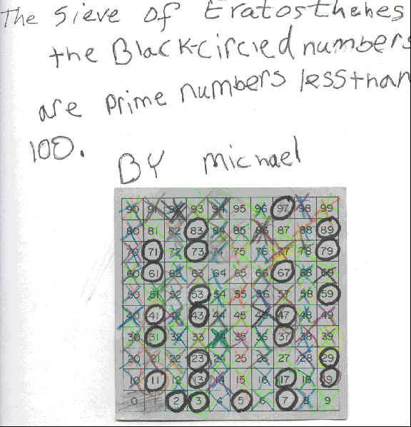

Mike, a 5th grader, makes the Sieve of Eratosthenes

Michael circled 2 then crossed out all the multiples of 2 ( blue), then circled the next uncrossed-out number, 3. The he crossed out all the multiple of 3 (light green). He kept doing this and came out with the all prime numbers circled less than 100.